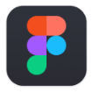
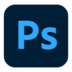
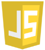

En designinriktad student på Civilingenjörsprogrammet Interaktion och Design, år 4. Stora intressen är Grafisk Design, Fotografering samt Bild & Videoredigering.
User Interface och User Experience är där jag har framfötterna. Att arbeta med samspelet mellan maskin och människa är en stapel inom programmet och med verktyg som Adobe Xd, Figma, Photoshop och Illustrator illustrerar jag lösningar på ett effektivt och intuitivt vis. Under programmets gång har jag dessutom fått erfarenhet med Front & Backend-utveckling, enklare webbutveckling är en stark svit som går att vidare jobba på med databashantering.


